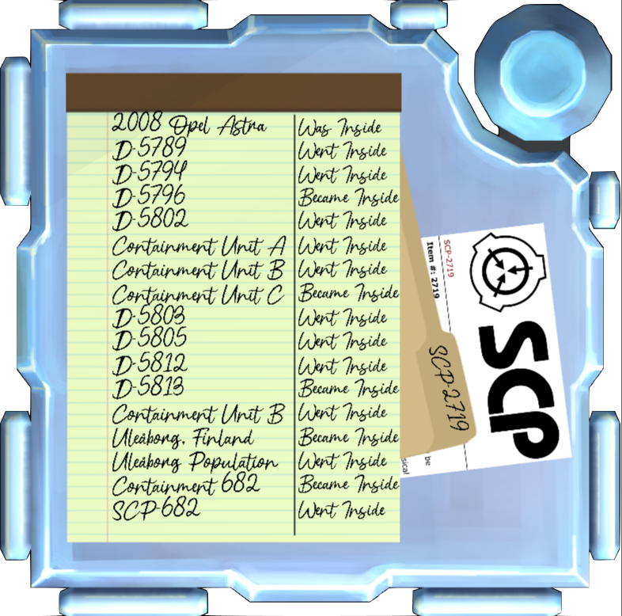

|  |
|---|
| A notepad containing the experimental data for SCP-2719. |
SCP-2719
Item #: SCP-2719
Object Class: Keter
Special Containment Procedures: SCP-2719 should be kept inside.
To return SCP-2719 to the state of being inside, find the letter that is currently inside. When the name of another containment device present is entered that has the inside letter, it will go inside. There is a chance that a letter in the user’s submission becomes inside instead. If no
letters are shared, then the input is outside, and will never become
inside until what is inside changes. All nonalphanumeric characters
excluding spaces should be dropped.
Certain words can be queried instead of the names of other containment devices, these words can be found on the second table. Do note that they have a considerably larger chance of becoming inside.
The row used should be that which what is currently inside is within the range of. The word in the middle column should be submitted first, then the one in the third column.
| A–E | Green | Status Light |
| F–J | Disarmed | Module |
| K–O | Contained | SCP |
| P–T | Missing | Pointer |
| U–Z | Transcendence | Defuser |
| Neutralized | Safe | Euclid | Keter | Apollyon |
| Jack | Alto | Charles | Everette | Quantum |
| Bright | Clef | Gears | King | Unknown |
| ████████████ | Expunged | Zermelo | Metaphysical | Redacted |
Description: SCP-2719 is a variable abstract-metaphysical construct pointer. Concepts acted upon by SCP-2719 will either go or become inside. Further information on SCP-2719 should not be provided to personnel who are both sapient and biological.